系統簡介
差勤管理系統是專為中小企業設計的出勤管理平台，涵蓋員工打卡、請假、加班、補卡等日常差勤流程，並提供主管簽核、異常偵測、報表產出等管理功能。
系統由兩個主要介面組成：
- 行動 APP（員工端）：員工透過手機進行上下班打卡、查看出勤紀錄、提送各類申請
- 管理後台（Web）：管理人員透過電腦瀏覽器進行人事管理、簽核處理、報表查詢與匯出
本手冊為管理後台的操作說明文件。
角色與權限
系統定義三種角色，各角色可使用的功能範圍不同：
| 角色 | 說明 | 後台可用功能 |
|---|---|---|
| 管理員 | 人事管理人員，負責系統設定與人事作業 | 全部功能（自助服務 + 簽核管理 + 報表中心 + 基礎資料管理） |
| 老闆 | 公司負責人，為最終簽核人 | 全部功能（同管理員） |
| 一般員工 | 一般員工；若被指派為部門主管，可簽核部屬的申請 | 僅限「自助服務」（我的請假、我的加班、我的補卡、假期餘額） |
登入系統
開啟瀏覽器，進入管理後台網址。系統會顯示登入頁面。
帳號密碼登入
- 在登入頁面輸入員工編號（如 ADMIN001）
- 輸入密碼
- 點擊「登入」按鈕
- 登入成功後，管理員／老闆會導向「簽核中心」；一般員工會導向「我的請假」
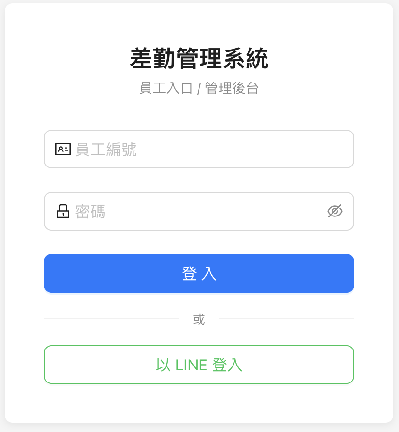
介面導覽
登入後，管理後台的介面由以下區域組成：
- 頂部標題列：顯示系統名稱「差勤管理後台」及目前登入的使用者名稱與角色
- 左側導覽選單：依角色顯示可用功能項目，分為「自助服務」「簽核管理」「報表中心」「基礎資料」四大群組
- 主要內容區：點擊左側選單項目後，右側會顯示對應的頁面內容
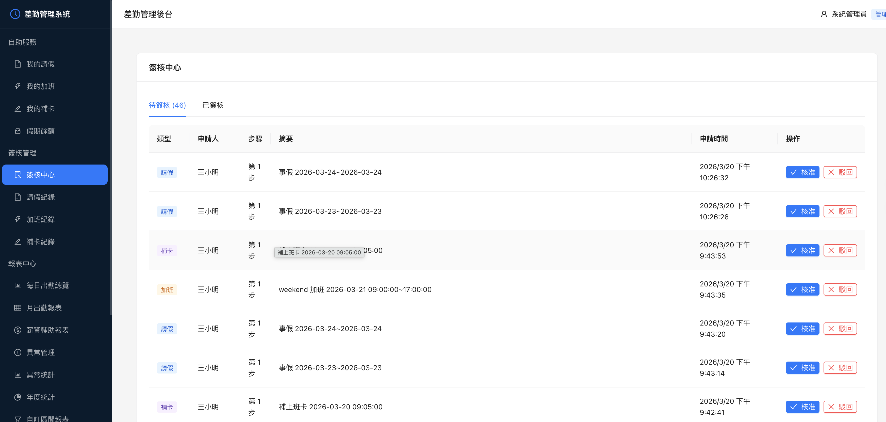
一般員工登入後，左側選單僅顯示「自助服務」群組（我的請假、我的加班、我的補卡、假期餘額）。
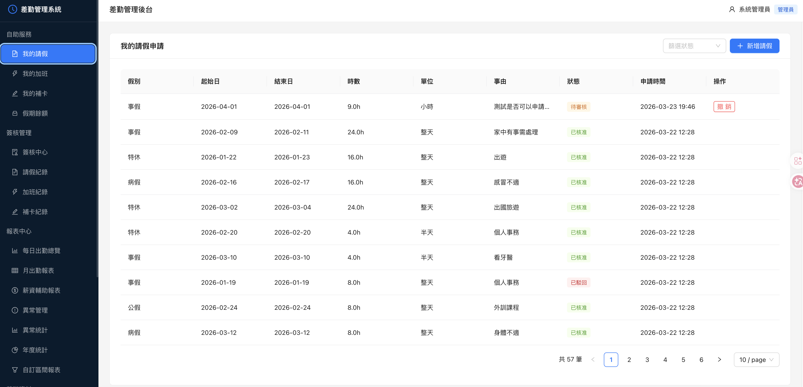
自助服務
管理員 老闆 一般員工 — 所有已登入的使用者皆可使用自助服務功能。
我的請假
此頁面顯示您個人的所有請假申請紀錄，並可新增請假申請或撤銷待審核的申請。
檢視請假紀錄
- 進入後預設顯示所有請假紀錄，可依狀態篩選（待審核、已核准、已駁回）
- 每筆紀錄顯示：假別、起始日、結束日、時數、單位（整天/半天/小時）、事由、狀態、申請時間
- 使用表格底部的分頁功能瀏覽更多紀錄
新增請假申請
- 點擊右上角「＋ 新增請假」按鈕
- 選擇假別（如事假、特休、病假、公假等）
- 依假別自動顯示可用的請假單位（整天、半天、小時），選擇對應單位
- 選擇日期範圍（起始日～結束日）；依單位不同，可能需要選擇上午/下午或指定時段
- 填寫事由（選填，但建議填寫以利簽核）
- 點擊「送出申請」
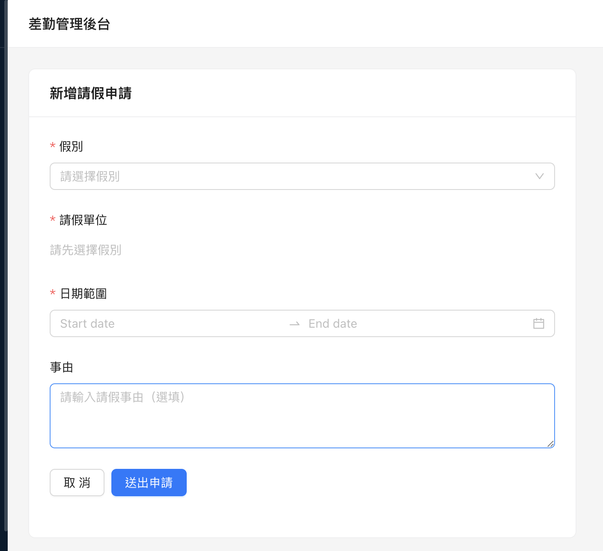
撤銷請假申請
- 僅限「待審核」狀態的申請才可撤銷
- 在紀錄列表中，點擊對應項目的「撤銷」按鈕
- 確認後申請狀態會變更為「已撤銷」
我的加班
此頁面顯示您個人的所有加班申請紀錄，並可新增加班申請。
檢視加班紀錄
- 預設顯示所有加班申請，可依狀態篩選
- 每筆紀錄顯示：加班類型（平日/假日）、日期、時段、時數、原因、狀態
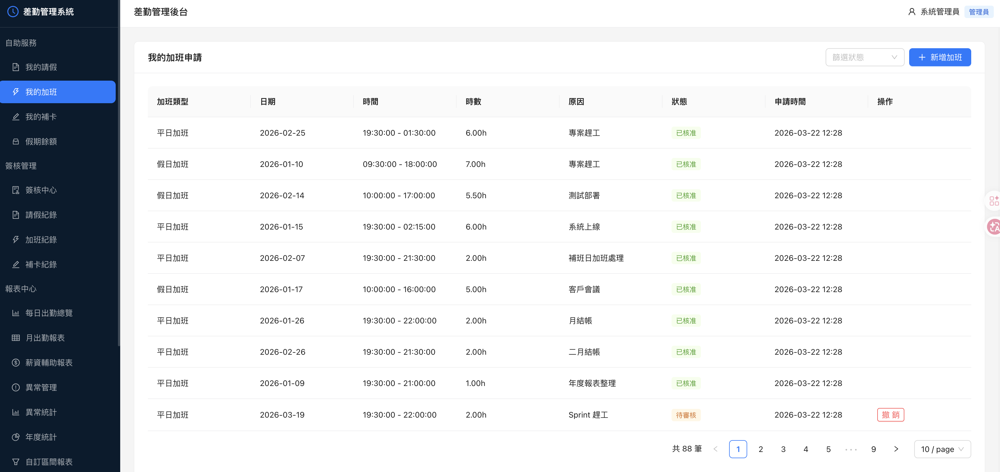
新增加班申請
- 點擊右上角「＋ 新增加班」按鈕
- 選擇加班類型（平日加班 / 假日加班）
- 選擇加班日期
- 設定起始時間與結束時間，系統會自動計算加班時數
- 填寫加班原因
- 點擊「送出申請」
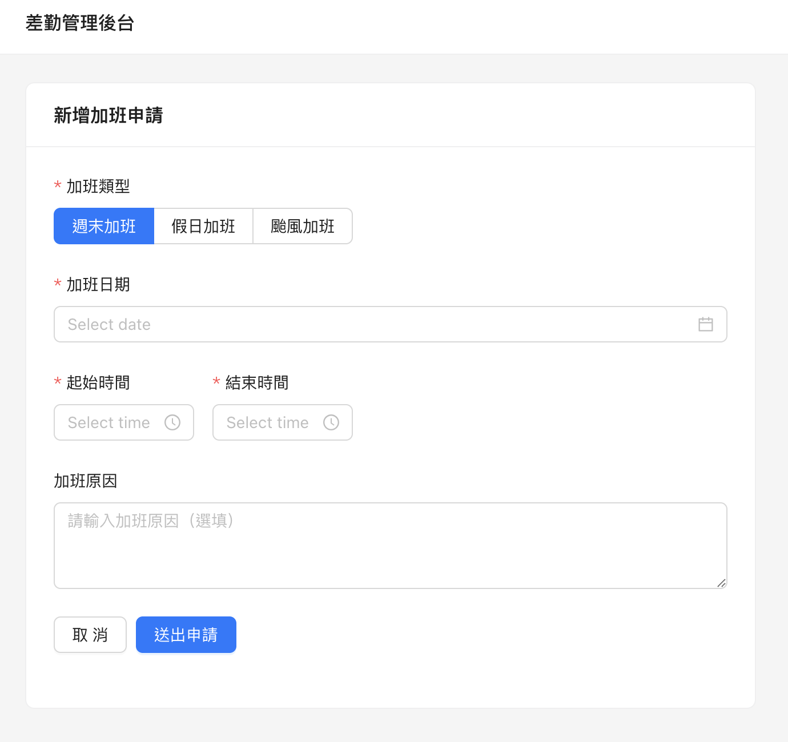
我的補卡
如果您忘記打上班卡或下班卡，可透過此頁面申請補卡。
檢視補卡紀錄
- 顯示所有補卡申請紀錄，可依狀態篩選
- 每筆紀錄顯示：補卡類型（上班卡 / 下班卡）、日期、補卡時間、原因、狀態
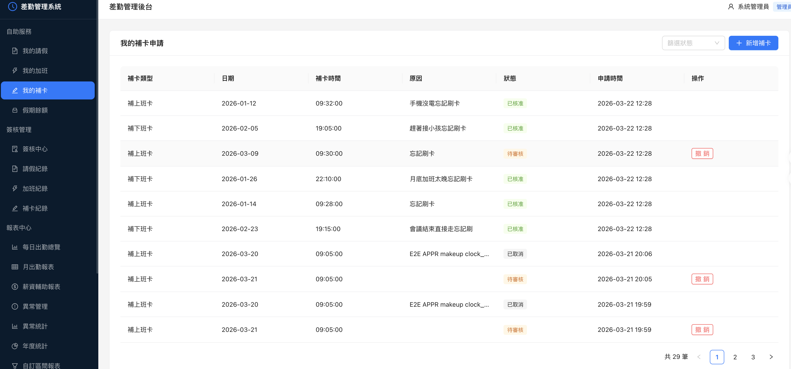
新增補卡申請
- 點擊右上角「＋ 新增補卡」按鈕
- 選擇補卡類型（補上班卡 / 補下班卡）
- 選擇補卡日期（僅可選擇 3 個日曆天以內的日期）
- 設定補卡時間（HH:MM 格式，可選 00:00～23:59）
- 填寫補卡原因
- 點擊「送出申請」
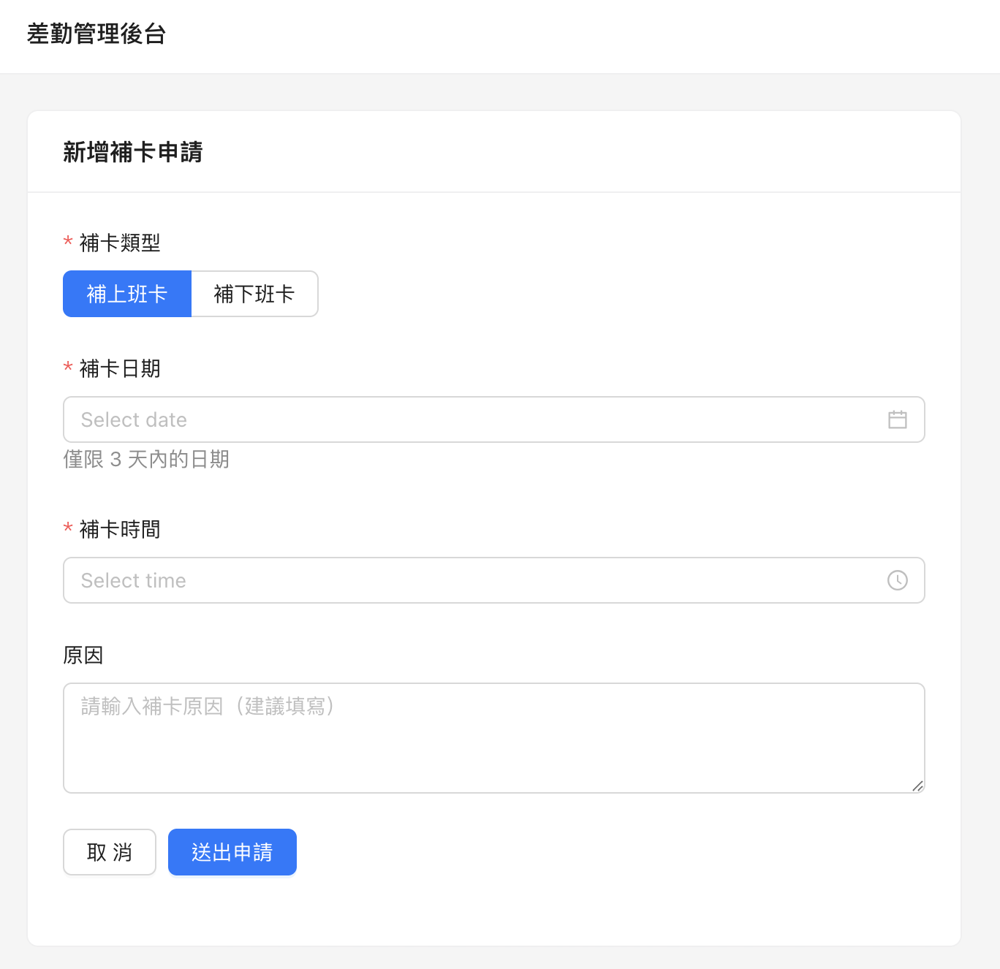
- 須在事發後 3 個日曆天內提出申請，逾期無法申請
- 當天打卡紀錄已有 2 筆（含）以上時，不得申請補卡
- 每天最多申請 2 筆補卡（上班卡與下班卡需分開申請）
- 補卡申請須經主管核准後才會計入出勤紀錄
假期餘額
查看您個人在各假別的剩餘額度。
- 頁面顯示當年度各假別的總額度、已使用、剩餘，並以進度條方式直覺呈現
- 可切換年度查看歷年紀錄
- 僅顯示有額度的假別（如特休、事假、病假等）
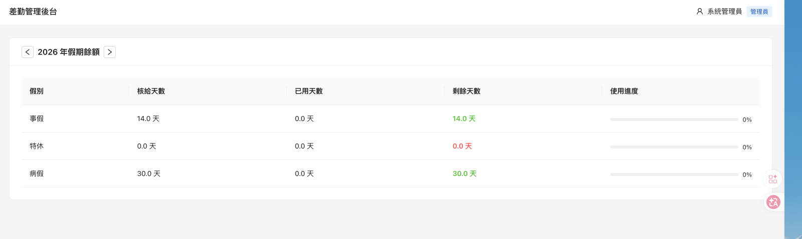
簽核管理
管理員 老闆 — 僅管理員與老闆可使用簽核管理功能。
簽核中心
簽核中心是處理員工請假、加班、補卡申請的統一入口。管理員與老闆登入後，預設會導向此頁面。
待簽核列表
- 頁面分為「待簽核」和「已簽核」兩個 Tab 頁籤
- 待簽核列表顯示所有等待您核准的申請：類型（請假/加班/補卡）、申請人、簽核步驟、摘要、申請時間
- 每筆申請旁有「核准」與「駁回」兩個操作按鈕
核准 / 駁回申請
- 在待簽核列表中，找到要處理的申請
- 點擊「✓ 核准」或「✕ 駁回」按鈕
- 若駁回，可填寫備註說明駁回原因
- 確認後申請狀態會更新，並通知申請人
已簽核紀錄
切換到「已簽核」Tab 可查看您過去核准/駁回的歷史紀錄。
請假紀錄
查看全公司所有員工的請假申請紀錄。
- 可依狀態篩選（待審核、已核准、已駁回、已撤銷）
- 顯示完整資訊：申請人、假別、起始日、結束日、時數、事由、簽核狀態、簽核備註等
- 支援分頁瀏覽
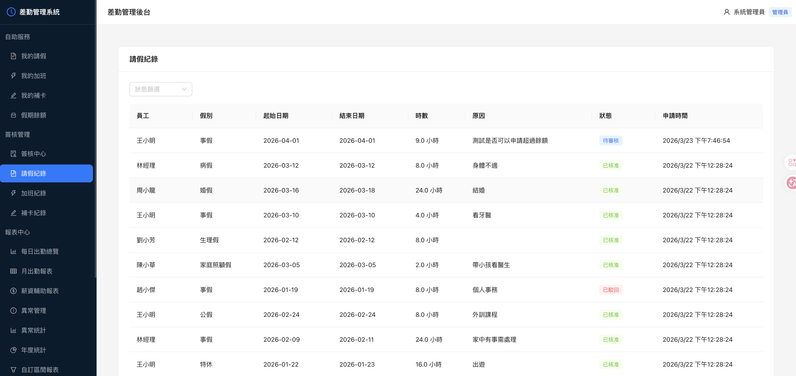
加班紀錄
查看全公司所有員工的加班申請紀錄。
- 可依狀態篩選
- 顯示：申請人、加班類型（平日/假日）、日期、時段、時數、原因、狀態等
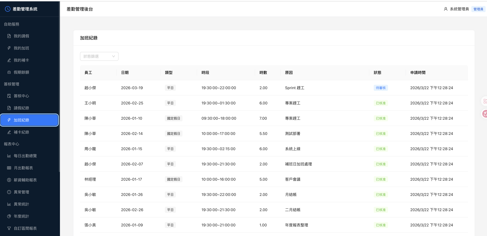
補卡紀錄
查看全公司所有員工的補卡申請紀錄。
- 可依狀態篩選
- 顯示：申請人、補卡類型（上班卡/下班卡）、日期、補卡時間、原因、狀態等
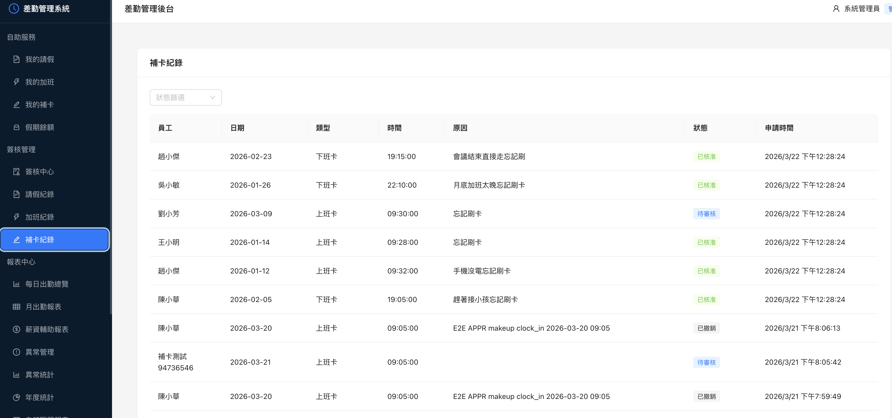
報表中心
管理員 老闆 — 報表中心提供各種出勤統計與異常管理功能。
每日出勤總覽
以日期為維度，查看全公司當日的出勤狀況一覽。
頁面說明
- 右上角可選擇日期，切換不同日期的出勤資料
- 摘要卡片：顯示當日總人數、正常出勤、遲到、請假、曠職/缺卡、早退等各項統計
- 員工出勤表格：列出每位員工的員工編號、姓名、部門、班別、上班打卡、下班打卡、打卡方式、外勤、遲到分鐘、狀態等
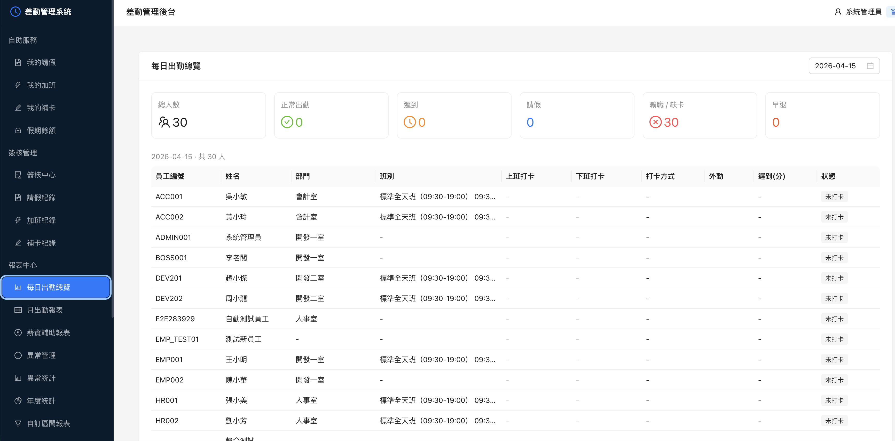
月出勤報表
以月份為維度，彙總全公司每位員工的出勤統計。
頁面說明
- 可選擇年份、月份和部門篩選
- 頂部顯示：該月應出勤天數、員工人數
- 表格欄位包含：員工編號、姓名、部門、應出勤天、實出勤天、缺勤天、遲到、早退、外勤天、加班時數、誤餐費、請假時數
- 右上角可點擊「匯出 Excel」按鈕下載報表檔案
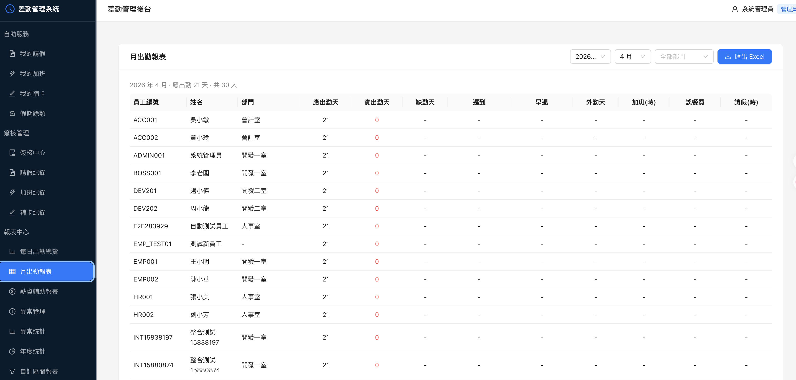
薪資輔助報表
專為薪資計算提供的出勤資料報表，可直接作為薪資計算的輸入依據。
頁面說明
- 可選擇年月與部門篩選
- 報表包含薪資計算所需的關鍵欄位：出勤天數、遲到基數、早退基數、平日加班時數、假日加班時數、誤餐費、各假別請假天數/時數等
- 右上角可點擊「匯出 Excel」下載，直接用於薪資作業
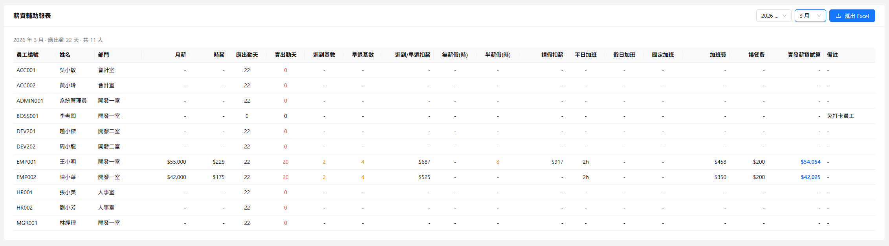
異常管理
異常管理儀表板用於集中查看並處理系統自動偵測到的出勤異常紀錄。
頁面說明
- 摘要卡片：顯示待處理、已處理、遲到、早退等異常數量統計
- 篩選條件：可依日期區間、異常類型、處理狀態進行篩選
- 異常列表：顯示日期、員工編號、姓名、異常類型、嚴重程度、說明、狀態
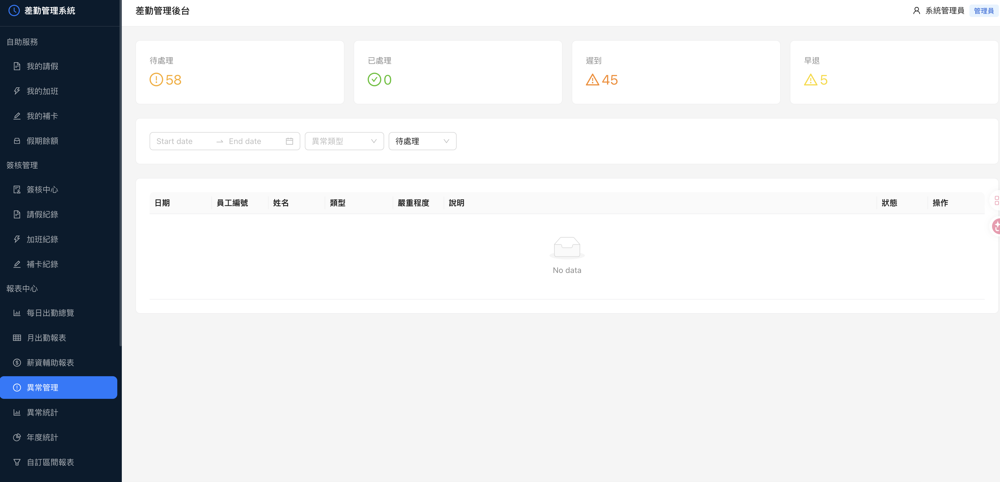
處理異常紀錄
對於每筆異常紀錄，管理員可進行以下操作：
- 標記「已確認」：確認此異常為正常情況（如主管口頭允許遲到）
- 標記「免計」：免除扣除（如公務外出造成的異常）
- 核准補卡：針對缺卡類異常，可直接核准對應的補卡申請
異常統計
以圖表方式呈現異常紀錄的統計分析，協助管理者掌握出勤異常趨勢。
- 可選擇日期區間進行查詢
- 異常類型長條圖：各類異常的數量分佈
- 嚴重程度圓餅圖：警告與嚴重異常的比例
- 明細卡片：各部門、各員工的異常次數排行
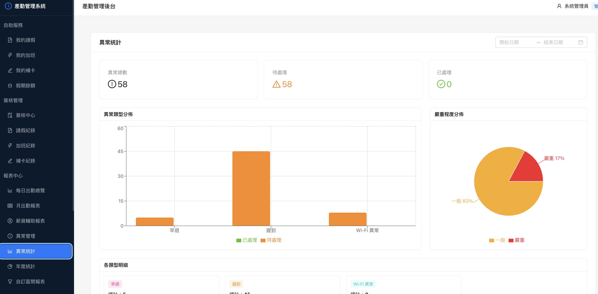
年度統計
以年度為維度，呈現全公司的出勤與假別使用統計。
- 特休使用率：全公司及各部門的特休使用率統計
- 各部門出勤率：以長條圖/圓餅圖呈現各部門的年度出勤表現
- 假別統計：各假別的年度使用量統計
- 個人明細：可查看各員工的年度出勤詳情
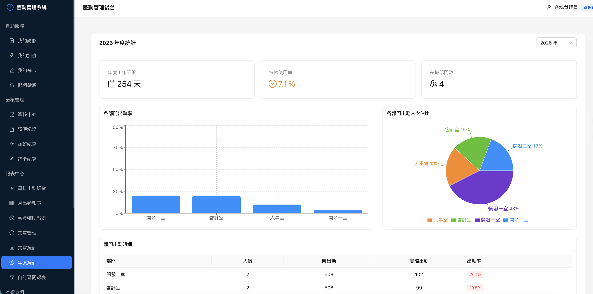
自訂區間報表
可自由選擇任意日期範圍產出出勤報表，不限於月份維度。
- 使用日期範圍選擇器指定起迄日期
- 可依部門篩選
- 報表欄位與月出勤報表相同：出勤天數、遲到、早退、加班、請假等
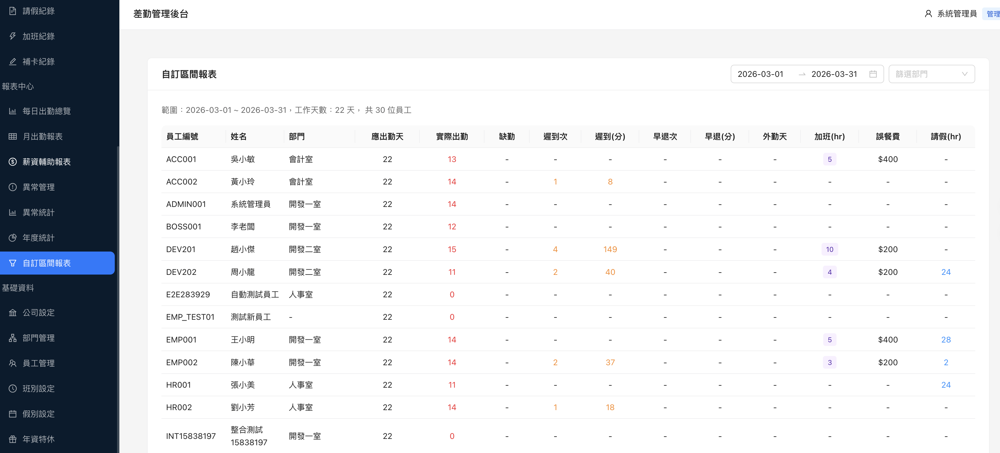
基礎資料管理
管理員 老闆 — 基礎資料管理涵蓋公司核心設定，建議由管理員（人事）進行日常維護。
公司設定
設定公司基本資訊及打卡相關參數。
設定項目說明
| 欄位 | 說明 |
|---|---|
| 公司名稱 | 公司正式名稱（必填） |
| 地址 | 公司地址 |
| GPS 緯度 / 經度 | 公司所在的 GPS 座標，作為打卡圍欄的中心點 |
| 圍欄半徑（公尺） | GPS 打卡圍欄的有效半徑，預設 200 公尺 |
| Wi-Fi SSID | 公司指定的 Wi-Fi 名稱，員工打卡時必須連接此 Wi-Fi 才算正常打卡 |
| LINE Channel ID | LINE Login 的 Channel ID（由 LINE Developers Console 取得） |
| LINE Channel Secret | LINE Login 的 Channel Secret（留空表示不更改） |
| 人事部門 | 指定人事部門，系統會用於特定流程的判斷 |
操作步驟
- 在左側選單點擊「基礎資料 > 公司設定」
- 修改需要變更的欄位
- 點擊「儲存設定」按鈕
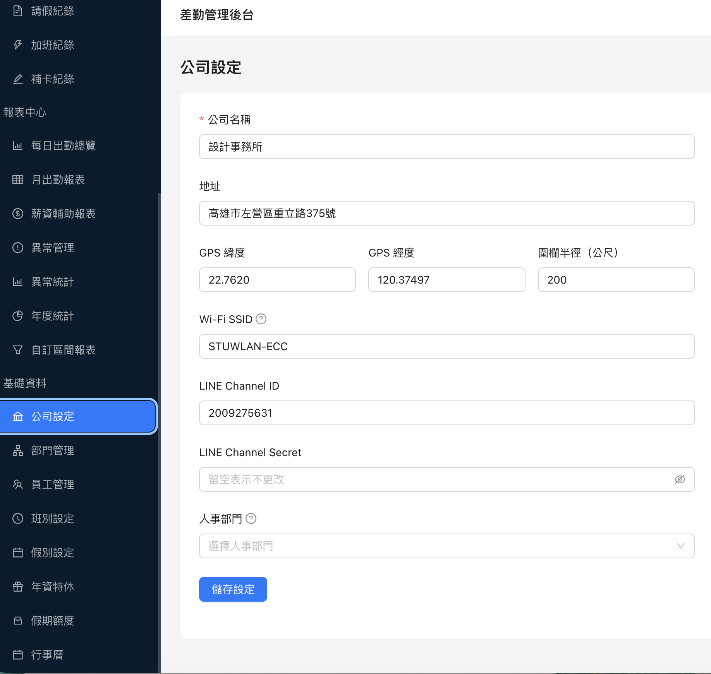
部門管理
管理公司的組織架構，建立、編輯部門並指定部門主管。
檢視部門列表
- 頁面顯示所有部門：部門名稱、部門主管、狀態
新增部門
- 點擊「＋ 新增部門」按鈕
- 輸入部門名稱
- 選擇部門主管（從員工清單中選擇）
- 點擊「確定」儲存
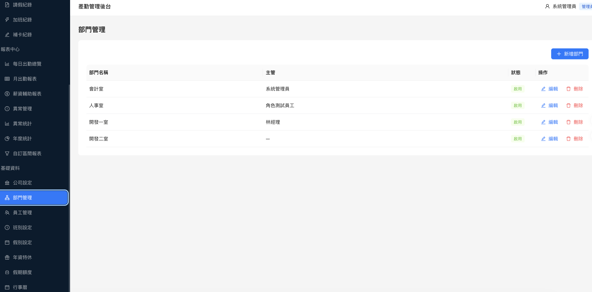
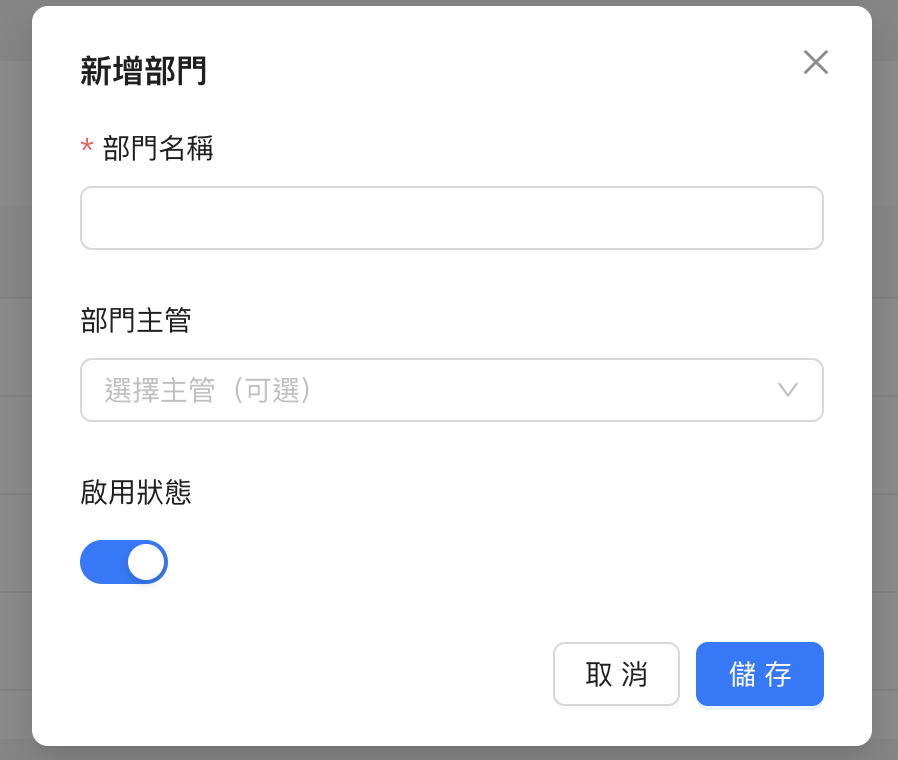
編輯 / 刪除部門
- 點擊「編輯」可修改部門名稱和主管
- 點擊「刪除」可移除部門；若部門下仍有員工，無法刪除，系統會提示「有 X 位員工在此部門，無法刪除」
員工管理
管理全公司員工資料，包含新增、編輯、停用員工，以及 LINE 綁定和代理人設定。
檢視員工列表
- 可使用搜尋框以姓名或工號搜尋
- 可依部門和狀態（在職 / 停用）篩選
- 表格欄位：員工編號、姓名、部門、職稱、到職日、角色、LINE 綁定狀態、在職狀態
- 操作：編輯、代理人設定、LINE 綁定碼、停用/啟用
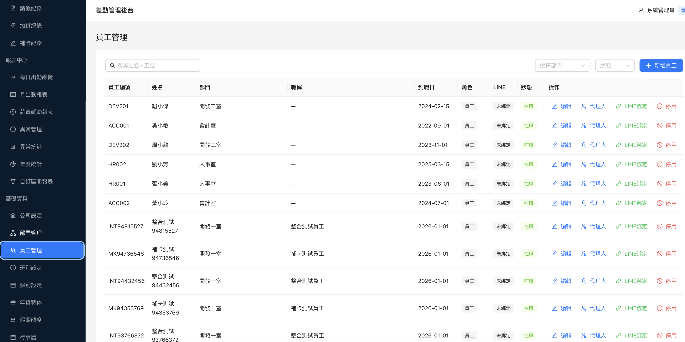
新增員工
- 點擊右上角「＋ 新增員工」按鈕
- 填寫必要資訊：員工編號、姓名、Email、部門、職稱、到職日
- 選擇角色：管理員 / 員工 / 老闆
- 選擇預設班別
- 設定初始密碼
- 點擊「確定」儲存
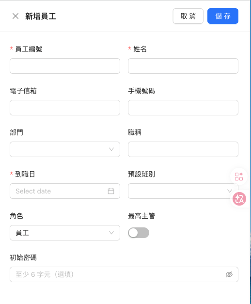
- 員工編號不可重複，設定後無法修改
- 到職日是計算年資與特休天數的依據，請確認正確
- 角色設定為「老闆」的帳號將成為最終簽核人（全公司僅應有一位）
編輯員工
點擊員工列表中的「編輯」按鈕，可修改員工的部門、職稱、班別、密碼等資訊。
代理人設定
為員工指定代理人，當該員工請假時，其待簽核的項目會由代理人協助處理。
- 在員工列表中，點擊對應員工的「代理人」按鈕
- 從下拉選單中選擇代理人
- 確認儲存
LINE 綁定
管理員可為員工產生 LINE 綁定碼，員工在手機 APP 首次使用 LINE 登入時，需輸入此綁定碼來關聯帳號。
- 點擊「LINE 綁定」按鈕可產生綁定碼
- 將綁定碼提供給員工，員工在 APP 中輸入即完成綁定
- 已綁定的員工，表格中 LINE 欄位會顯示「已綁定」
停用 / 啟用員工
- 點擊「停用」可將離職員工帳號標記為停用，停用後員工無法登入但歷史紀錄保留
- 已停用的員工可點擊「啟用」恢復使用
班別設定
管理公司的班別（工作時間制度），每位員工會被指派一個預設班別。
班別類型
| 類型 | 說明 | 適用情境 |
|---|---|---|
| 固定班 | 設定明確的上下班時間，系統依此判斷遲到、早退 | 多數員工的標準工作制 |
| 彈性班 | 不設固定上下班時間，僅檢查每日最低工時 | 不需管控上下班時間的特殊職位 |
新增班別
- 點擊「＋ 新增班別」按鈕
- 輸入班別名稱（如「標準全天班」）
- 選擇班別類型（固定班/彈性班）
- 固定班需設定：上班時間、下班時間、彈性分鐘數
- 彈性班需設定：最低工時（小時）
- 可設定是否為預設班別
- 點擊「確定」儲存
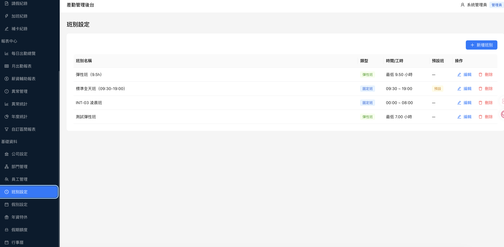
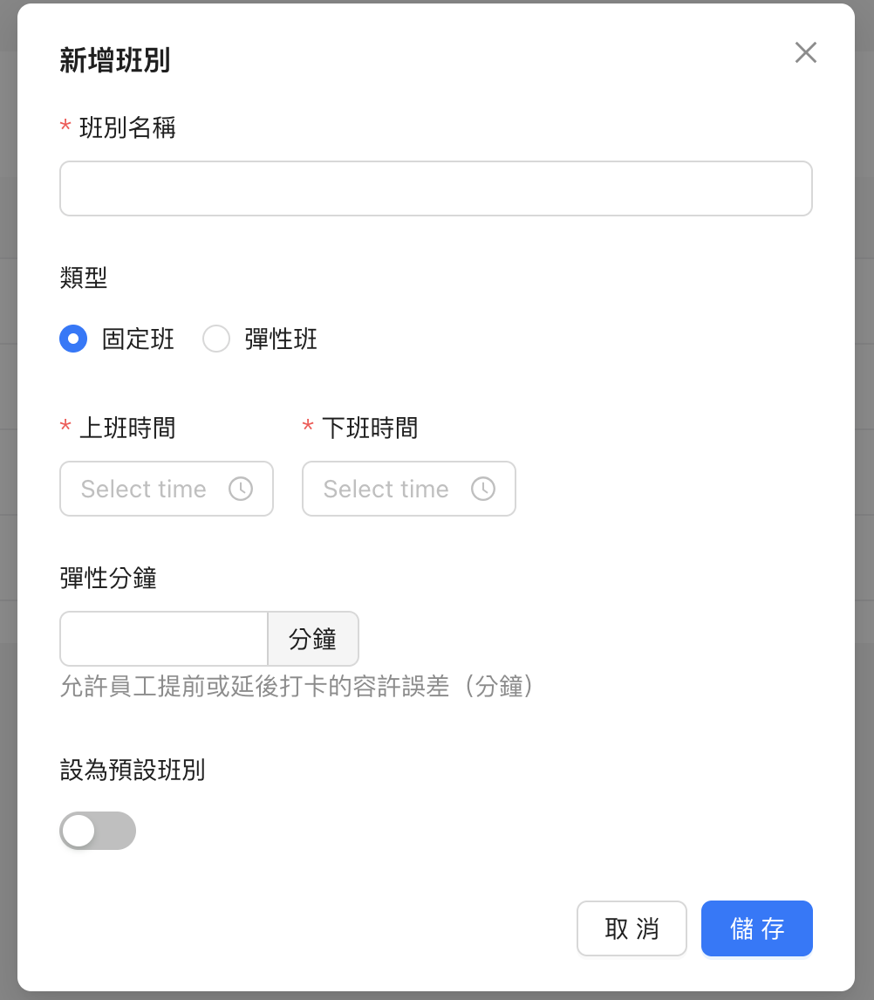
假別設定
管理公司提供的假別種類及其規則。
假別列表
- 顯示所有假別：名稱、年度上限天數、是否需附件、給薪方式、最小請假單位、簽核層級、啟用狀態
- 可以切換啟用/停用假別（停用後員工無法申請該假別）
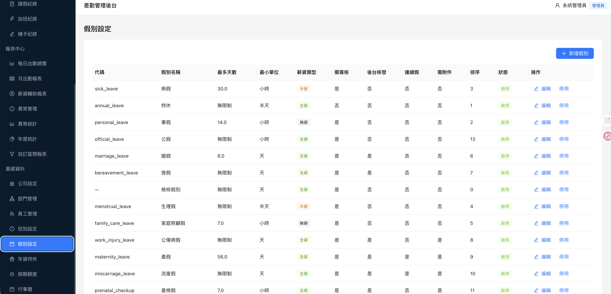
新增假別
- 點擊「＋ 新增假別」按鈕
- 填寫假別名稱
- 設定年度上限天數
- 設定最小請假單位（0.5 天 / 1 天 / 0.5 小時 / 1 小時等）
- 設定是否需要附件證明
- 設定簽核層級（1 = 僅需部門主管 / 2 = 主管 + 老闆）
- 點擊「確定」儲存
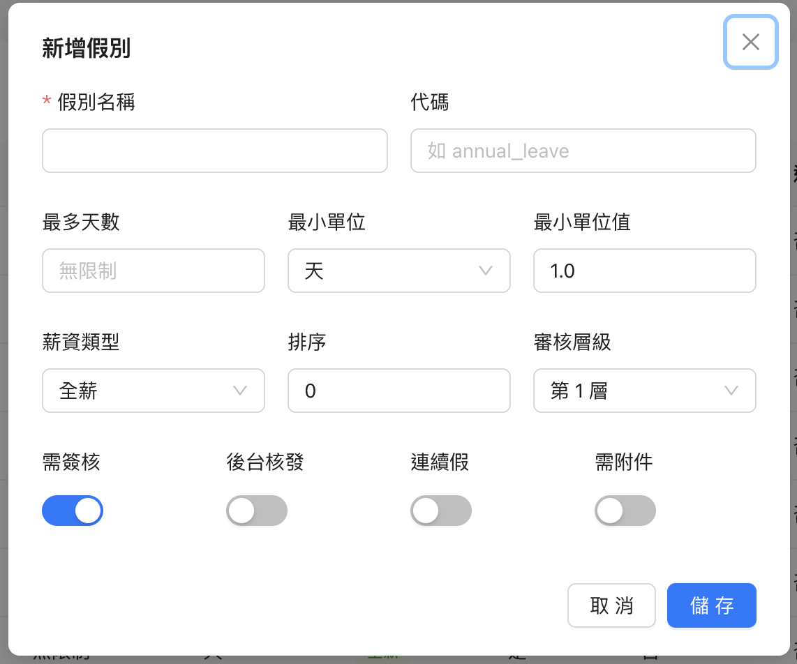
- 員工可直接申請：如事假、病假、生理假、公差，系統自動提供額度，員工可直接在自助服務中申請
- 後端給假：如婚假、喪假、產假等特殊假別，須由管理員先在「假期額度」中為員工建立額度，員工才能看到並申請
年資特休
設定年資與特休天數的對照規則，系統會依據員工到職日的年資自動計算特休天數。
年資規則列表
- 顯示各年資區間對應的特休天數
- 預設已依勞基法 §38 建立標準規則
- 公司可設定優於法令的規則（如較多的特休天數）
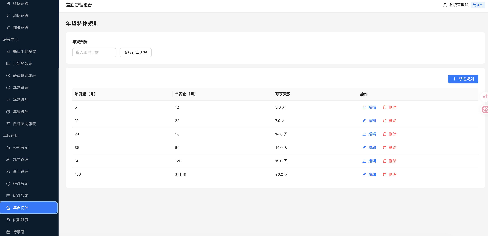
新增 / 編輯規則
- 點擊「＋ 新增年資規則」
- 設定年資起始月數與年資結束月數
- 設定對應的特休天數
- 點擊「確定」儲存
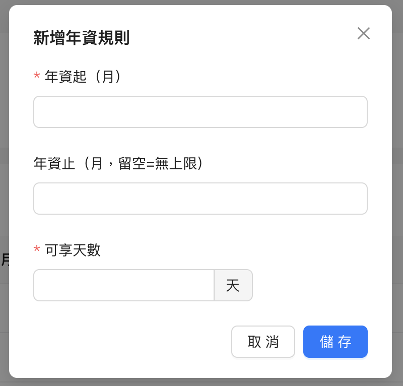
假期額度
管理各員工在各假別的年度額度。部分假別（如特休）可批次初始化，部分特殊假別（如婚假、喪假）需手動建立。
頁面說明
- 選擇年度查看該年度所有員工的假期額度
- 表格顯示：員工、假別、總天數、已使用、剩餘
- 可直接在表格中編輯額度（如手動調整天數）
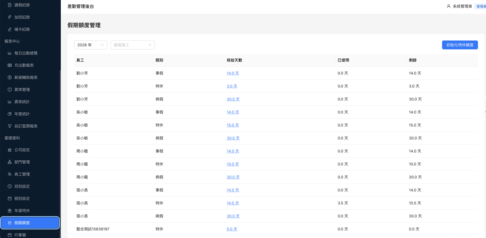
初始化特休額度
- 選擇年度（如 2026 年）
- 點擊「初始化特休額度」按鈕
- 系統會依據「年資特休」規則與員工到職日，自動計算並建立所有在職員工的特休額度
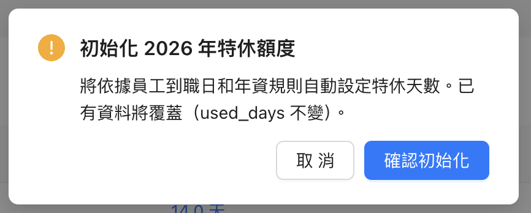
行事曆
管理公司的年度行事曆，包含國定假日、公司自訂假日及補班日的設定。
行事曆類型
| 類型 | 說明 | 對出勤的影響 |
|---|---|---|
| 國定假日 | 依政府公告之國定假日 | 當日不需上班，不列入出勤計算 |
| 公司假日 | 公司自訂假日（如颱風假、尾牙） | 當日不需上班，不列入出勤計算 |
| 補班日 | 依政府公告之補班日 | 原本休假日改為上班日，需正常出勤 |
操作說明
- 頁面以年份 Tab 切換不同年度的行事曆
- 可新增假日：選擇日期、類型、輸入名稱
- 可編輯或刪除現有假日
- 支援批次匯入功能，可一次匯入整年度的國定假日
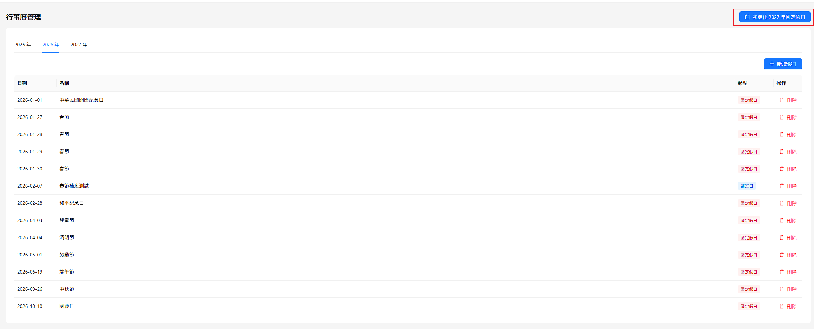
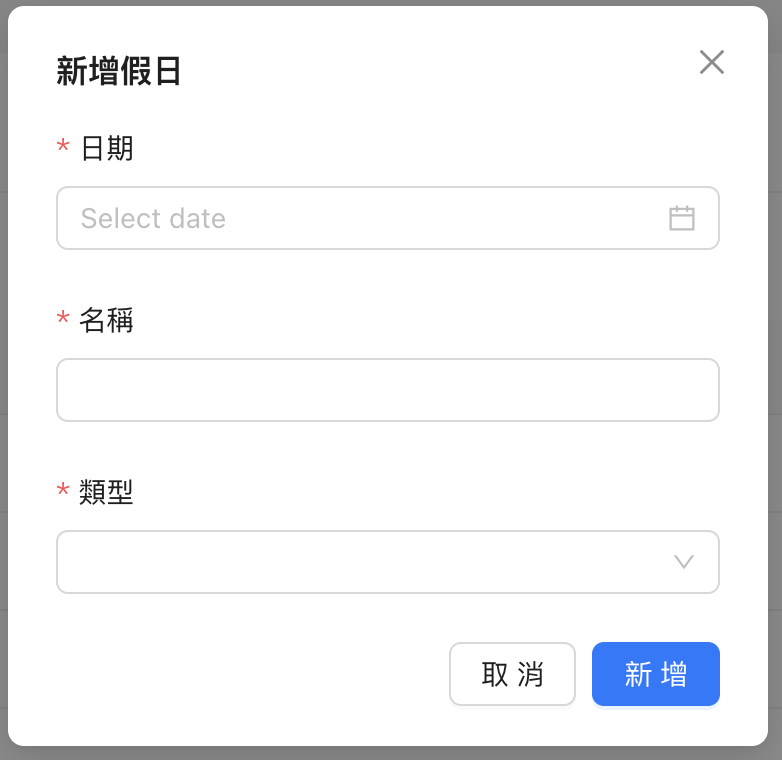
規則參考
以下為系統中各項差勤規則的詳細說明，供使用者了解系統判斷邏輯。
出勤與打卡規則
全天班出勤規則
| 項目 | 規則 |
|---|---|
| 標準上班時間 | 依班別設定（如 09:30） |
| 彈性分鐘 | 依班別設定（如 5 分鐘），表示 09:35（含）前到皆算正常 |
| 遲到計算 | 超過彈性時間後開始計算，以「標準上班時間」為基準，每 30 分鐘為 1 個遲到基數 |
| 應下班時間 | 提早上班（打卡 < 09:30）：打卡時間 + 9.5 小時 準時或遲到（打卡 ≥ 09:30）：固定為班別下班時間（如 19:00） |
| 早退計算 | 下班打卡 < 應下班時間，每 30 分鐘為 1 個早退基數 |
| 每日異常基數上限 | 遲到 + 早退合計最多 16 基數 |
下午半天班規則
| 項目 | 規則 |
|---|---|
| 適用條件 | 12:00 以後才打上班卡 |
| 正常到班時間 | 12:00～13:30（無彈性） |
| 遲到起算 | 13:30 之後打卡算遲到，以 13:30 為基準計算基數 |
| 固定下班時間 | 17:30 |
打卡驗證機制
員工透過 APP 打卡時，系統採用 Wi-Fi + GPS 雙重驗證：
| 場景 | Wi-Fi | GPS | 結果 |
|---|---|---|---|
| 正常辦公 | 已連接公司 Wi-Fi | 圍欄內 | ✅ 正常打卡 |
| Wi-Fi 正常但 GPS 偏移 | 已連接公司 Wi-Fi | 圍欄外 | ✅ 正常打卡（Wi-Fi 優先） |
| GPS 在範圍但無 Wi-Fi | 未連接 | 圍欄內 | ❌ 範圍外 → 需外勤打卡 |
| Wi-Fi 未開啟 | 未開啟 | 任意 | ⚠️ 提醒開啟，否則外勤打卡 |
| 外勤 | 任意 | 任意 | 外勤打卡（需附照片） |
請假規則
假別一覽表
| 假別 | 年度上限 | 給薪 | 最小單位 | 需證明 | 簽核 |
|---|---|---|---|---|---|
| 特別休假（年假） | 依年資 | 全薪 | 0.5 天 | 否 | 一關 |
| 事假 | 14 天 | 不支薪 | 0.5 小時 | 否 | 一關 |
| 病假 | 30 天 | 半薪 | 1 小時 | 不要求 | 一關 |
| 生理假 | 每月 1 天 | 半薪（前3天） | 0.5 天 | 不得要求 | 一關 |
| 家庭照顧假 | 7 天（併入事假） | 不支薪 | 1 小時 | 否 | 一關 |
| 婚假 | 8 天 | 全薪 | 1 天 | 是 | 需要 |
| 喪假 | 依親屬 | 全薪 | 1 天 | 是 | 需要 |
| 公傷病假 | 無上限 | 全薪 | 1 天 | 是 | 需要 |
| 產假 | 8 週 | 全薪/半薪 | 1 天 | 是 | 需要 |
| 產檢假 | 7 天 | 全薪 | 1 小時 | 建議 | 需要 |
| 陪產檢及陪產假 | 7 天 | 全薪 | 半天 | 建議 | 需要 |
| 公差 / 公假 | 依需求 | 全薪 | 1 小時 | 否 | 需要 |
特休天數（年資對照表）
| 年資 | 特休天數 |
|---|---|
| 滿 6 個月未滿 1 年 | 3 天 |
| 滿 1 年未滿 2 年 | 7 天 |
| 滿 2 年未滿 3 年 | 10 天 |
| 滿 3 年未滿 5 年 | 14 天 |
| 滿 5 年未滿 10 年 | 15 天 |
| 滿 10 年以上 | 每年加 1 天，最多 30 天 |
喪假天數（親屬對照表）
| 親屬關係 | 天數 |
|---|---|
| 父母、養父母、繼父母、配偶 | 8 天 |
| 祖父母、子女、配偶之父母/養父母/繼父母 | 6 天 |
| 曾祖父母、兄弟姊妹、配偶之祖父母 | 3 天 |
補卡規則
| 規則 | 說明 |
|---|---|
| 適用條件 | 當天打卡紀錄不足 2 筆（上下班卡）時，才可申請 |
| 申請期限 | 事發後 3 個日曆天內提出申請 |
| 每日上限 | 每天最多 2 筆補卡（上班卡與下班卡需分開申請） |
| 時間範圍 | 00:00～23:59，精度至分鐘 |
| 審核流程 | 須經直屬主管核准，核准後才會計入出勤紀錄 |
| 未核准 | 當日仍視為缺卡異常 |
加班規則
平日加班
| 項目 | 規則 |
|---|---|
| 加班起算點 | 應下班時間 + 30 分鐘（晚餐時間），例如 19:00 下班則 19:30 起算 |
| 計算方式 | 下班打卡 - 加班起算點，每 60 分鐘為 1 小時（不足 1 小時不算） |
| 時數上限 | 無上限 |
| 誤餐費 | 加班 ≥ 2 小時，當日給付 NT$200（每日最多一次） |
平日加班範例（以 09:30 上班、19:30 起算為例）
| 下班時間 | 加班時數 | 誤餐費 |
|---|---|---|
| ≤ 20:29 | 0 小時 | — |
| 20:30～21:29 | 1 小時 | — |
| 21:30～22:29 | 2 小時 | NT$200 |
| 22:30～23:29 | 3 小時 | NT$200 |
| 23:30～00:29 | 4 小時 | NT$200 |
假日加班
| 項目 | 規則 |
|---|---|
| 假日定義 | 行事曆中的國定假日、週六、週日 |
| 計算方式 | 下班打卡 - 上班打卡（以整小時計，不足不算） |
| 休息扣除 | 每滿 4 小時扣 30 分鐘休息 |
| 誤餐費 | 未扣休息前的總時數 ≥ 11 小時，給付 NT$200 |
簽核流程
系統採用兩階段簽核機制，申請送出後由系統自動判斷簽核人。
簽核流程
| 申請人身份 | 第一關 | 第二關 |
|---|---|---|
| 一般員工 | 部門主管 | 若假別 approval_level=2，則由老闆核准 |
| 部門主管 | 老闆（直接跳過部門主管層級） | 不啟用 |
流程示意
員工送出申請 → 部門主管收到通知 → 主管核准/駁回
（若需兩關） → 老闆收到通知 → 老闆核准/駁回
部門主管自己的申請：
主管送出申請 → 老闆收到通知 → 老闆核准/駁回
代理簽核
當簽核人請假時，其待簽核項目會由事先設定的代理人處理。代理人需在「員工管理」中預先設定。
申請狀態說明
| 狀態 | 說明 |
|---|---|
| 待審核（pending） | 申請已送出，等待簽核人處理 |
| 已核准（approved） | 所有簽核關卡均已通過 |
| 已駁回（rejected） | 任一簽核關卡被駁回 |
| 已撤銷（cancelled） | 申請人在待審核時自行撤銷 |
行動 APP
行動 APP 供全體員工在手機上使用，可進行上下班打卡、提送請假 / 加班 / 補卡申請、查看出勤紀錄與通知。APP 支援 iOS 與 Android 雙平台。
APP 底部共有 5 個主要頁籤：
| 頁籤 | 圖示 | 說明 |
|---|---|---|
| 打卡 | 🏠 | 上下班打卡（首頁），顯示今日打卡狀態與 GPS / Wi-Fi 驗證結果 |
| 申請單 | 📋 | 提送與查看請假、加班、補卡申請 |
| 出勤紀錄 | 📅 | 以月曆檢視每日打卡紀錄與異常標記 |
| 通知 | 🔔 | 接收簽核結果、異常提醒等系統通知 |
| 個人 | 👤 | 個人資訊、LINE 綁定、密碼變更等 |
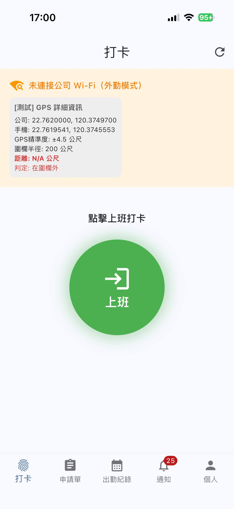
登入與 LINE 綁定
帳號密碼登入
- 開啟 APP，進入登入畫面
- 輸入員工編號（例如 EMP001）
- 輸入密碼（預設為管理員配發的初始密碼）
- 點擊「登入」按鈕
- 首次登入成功後會自動進入打卡首頁
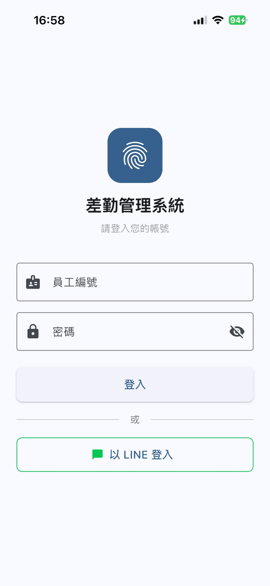
LINE 快速登入
若已完成 LINE 帳號綁定，可直接點擊登入畫面的「使用 LINE 登入」按鈕，透過 LINE OAuth 驗證後自動登入。
LINE 帳號綁定
- 先以帳號密碼登入 APP
- 前往「個人」頁籤 → 點擊「LINE 帳號綁定」
- APP 會導向 LINE 授權頁面，點擊「允許」
- 授權成功後返回 APP，顯示「LINE 已綁定」
- 之後即可在登入畫面使用「使用 LINE 登入」快速登入
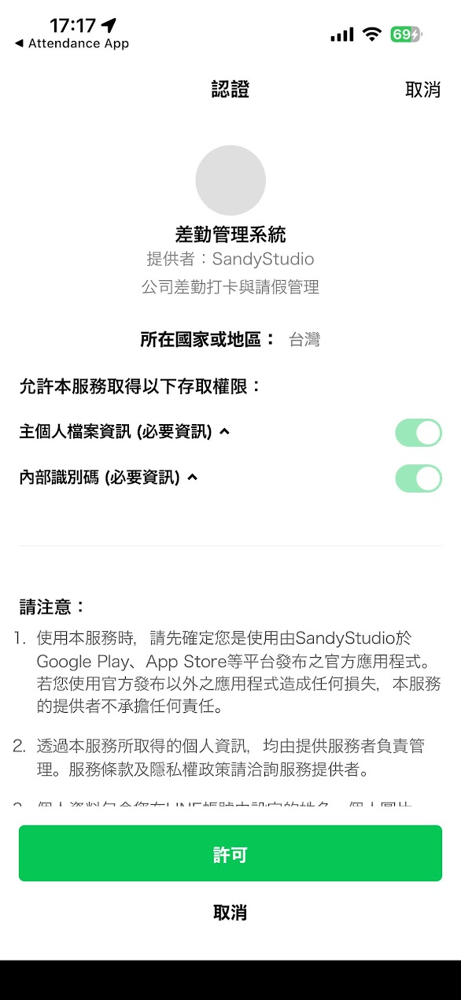
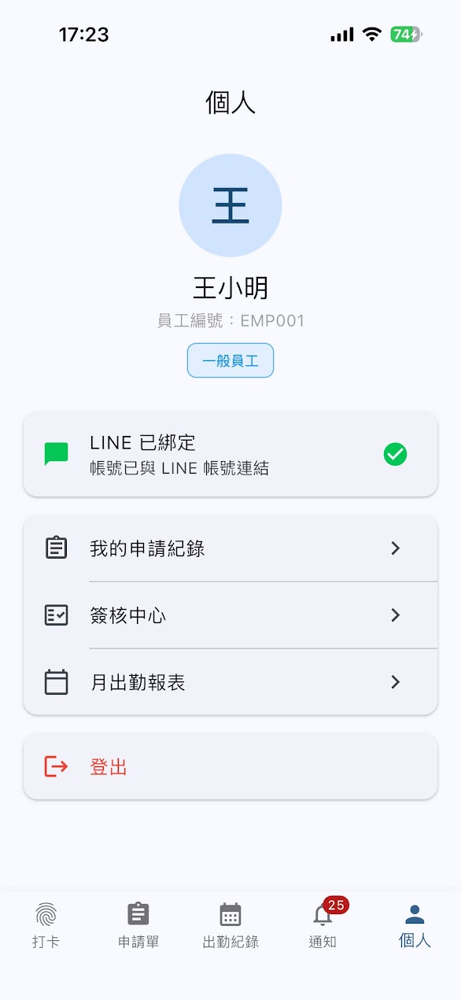
打卡
打卡頁面是 APP 的首頁，進入後系統會自動偵測目前的位置與 Wi-Fi 狀態，判斷是否在公司範圍內。
打卡驗證方式
系統同時採用 GPS 定位與Wi-Fi SSID 雙重驗證：
- GPS 驗證：根據手機定位座標，計算與公司位置的距離，在設定的圍欄半徑範圍內視為「在公司」
- Wi-Fi 驗證：偵測目前連線的 Wi-Fi 名稱，與公司設定的 SSID 比對。若公司啟用「Wi-Fi 必要模式」，則必須連上公司 Wi-Fi 才能正常打卡
正常打卡（公司範圍內）
- 開啟 APP，自動進入打卡頁面
- 頁面上方顯示目前 GPS 狀態與 Wi-Fi 連線狀態
- 當顯示「在公司範圍內」時，按下「上班打卡」按鈕
- 系統跳出確認對話框，點擊「確認打卡」
- 打卡成功後頁面會更新顯示打卡時間
- 下班時按下「下班打卡」按鈕，流程相同
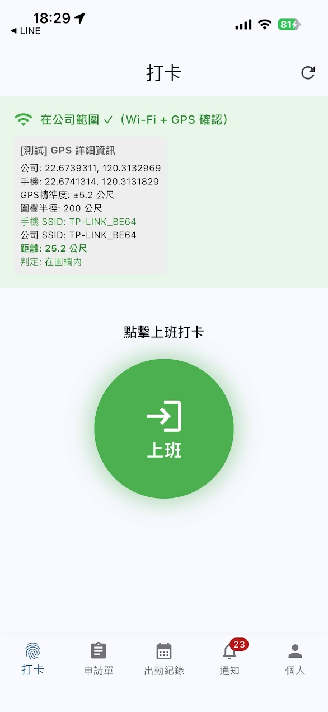
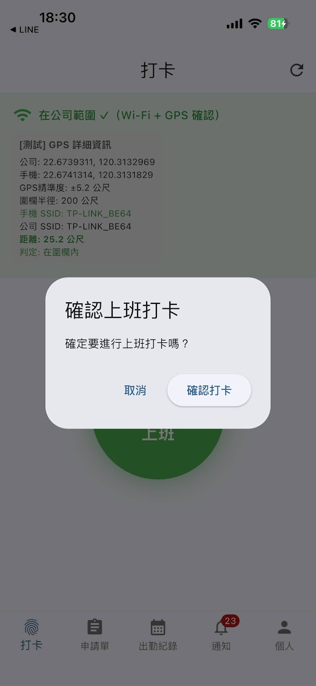
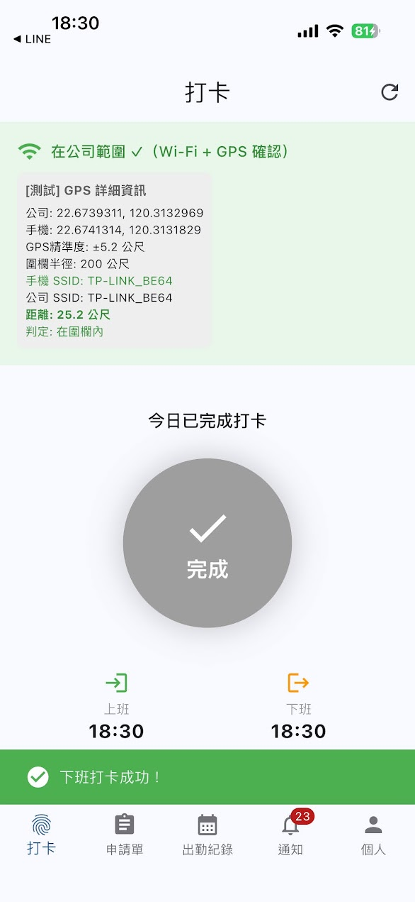
外勤打卡（不在公司範圍）
若員工因外出洽公等原因不在公司範圍內，系統會提示進行外勤打卡：
- 頁面顯示「不在公司範圍內」，並標示與公司的距離
- 按下打卡按鈕後，系統跳出外勤打卡確認對話框，告知目前距離公司約 XX 公尺
- 確認後系統會開啟相機要求拍照，作為外勤打卡佐證
- 拍照完成後送出打卡，記錄會標記為「外勤」
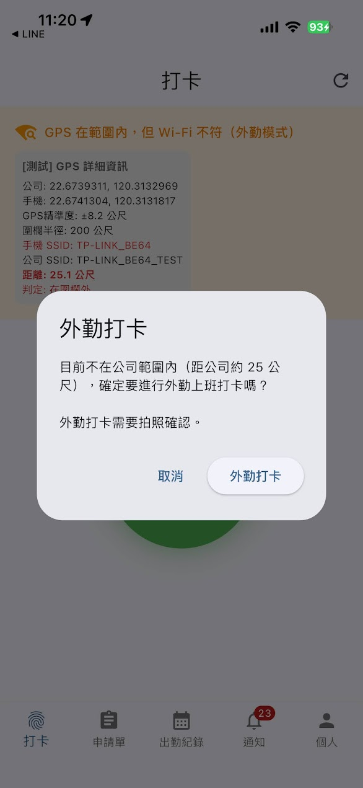
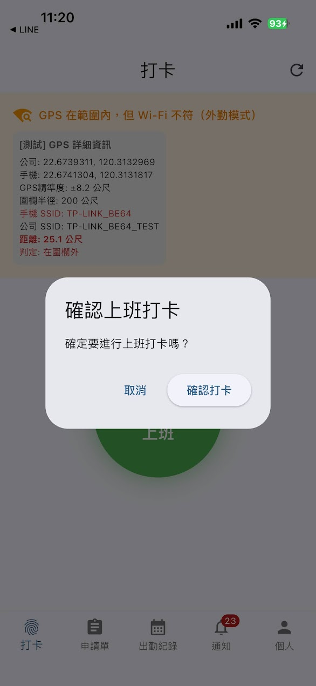
- 打卡按鈕有脈搏動畫效果，幫助快速辨識
- 若 Wi-Fi 必要模式啟用但手機未開啟 Wi-Fi，系統會提示開啟 Wi-Fi 設定
- 若 GPS 權限被拒絕，系統會引導開啟定位權限
- 上班打卡超過班別遲到標準即記為「遲到」；下班打卡早於班別結束時間即記為「早退」

申請單
點擊底部「申請單」頁籤，進入申請單管理頁面。頂部有三個子頁籤：請假、加班、補卡，可切換檢視不同類型的申請。
請假申請
- 在「請假」子頁籤下，點擊右下角的「+」浮動按鈕
- 進入請假申請表單：
- 選擇假別（特休、事假、病假等，僅顯示有額度的假別）
- 選擇的假別下方會顯示可用餘額
- 選擇起始日期 / 時間和結束日期 / 時間
- 系統自動計算請假時數
- 填寫請假事由
- 確認無誤後點擊「送出」按鈕
- 申請送出後狀態為「待審核」，等待主管簽核
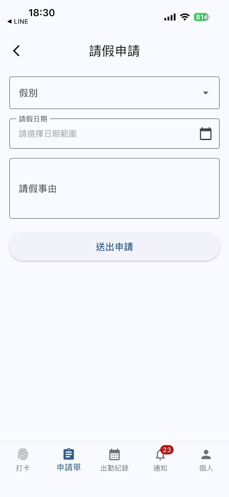
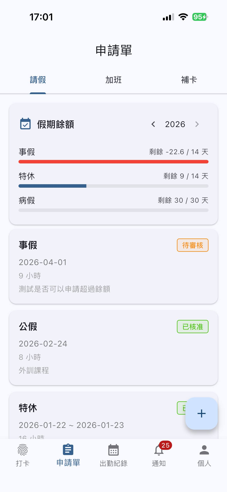
加班申請
- 切換到「加班」子頁籤，點擊「+」浮動按鈕
- 填寫加班申請表單：
- 選擇加班日期
- 選擇起始時間和結束時間
- 系統自動計算加班時數
- 填寫加班事由
- 確認後點擊「送出」
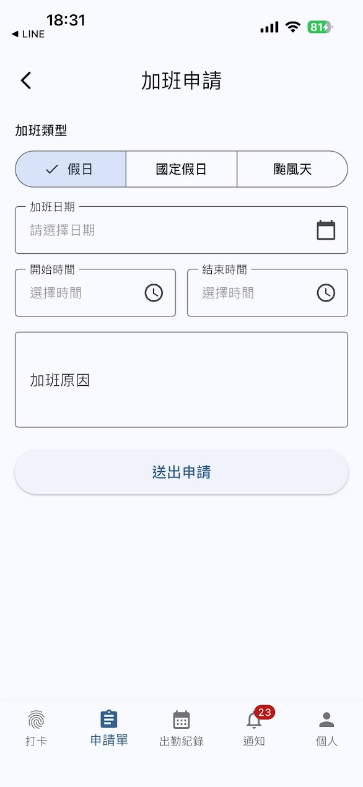
補卡申請
- 切換到「補卡」子頁籤，點擊「+」浮動按鈕
- 填寫補卡申請表單：
- 選擇補卡日期（限事發後 3 個日曆天內）
- 選擇補卡時間
- 選擇補卡類型（上班 / 下班）
- 填寫補卡原因
- 確認後點擊「送出」
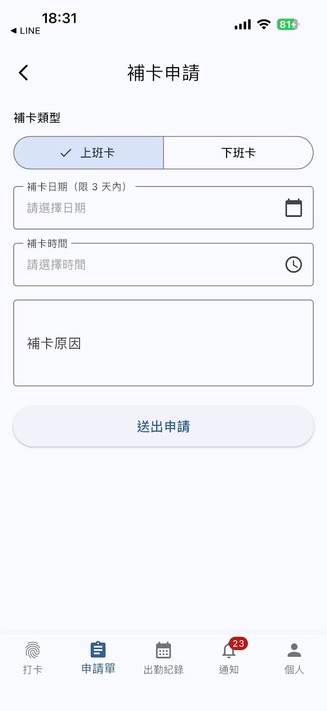
- 僅能補卡3 個日曆天內的紀錄
- 同一天最多2 筆補卡申請
- 已有 2 筆打卡紀錄的日期不可再補卡
申請狀態查看
每筆申請會以卡片方式呈現，顯示申請類型、日期、狀態標籤：
- 待審核 — 等待主管處理
- 已核准 — 主管已批准
- 已駁回 — 主管已退回，可查看駁回原因
- 已撤銷 — 員工自行撤銷
點擊任一申請卡片可進入詳情頁面，查看完整申請資訊與簽核結果。
出勤紀錄
點擊底部「出勤紀錄」頁籤，以月曆檢視方式查看整月的出勤狀況。
月曆畫面
- 每個日期格子會以顏色標記標示當日出勤狀態（正常、異常、請假、缺勤等）
- 點擊任一日期可快速展開該日的打卡紀錄詳情：上班時間、下班時間、打卡方式、是否異常
- 如該日有異常（遲到、早退、缺勤），可直接從月曆點擊快速補卡
- 使用左右箭頭或滑動切換月份
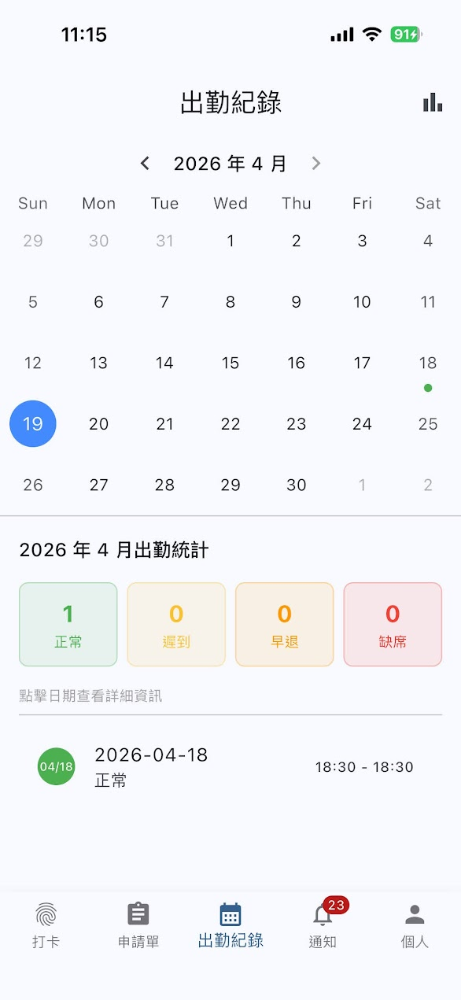
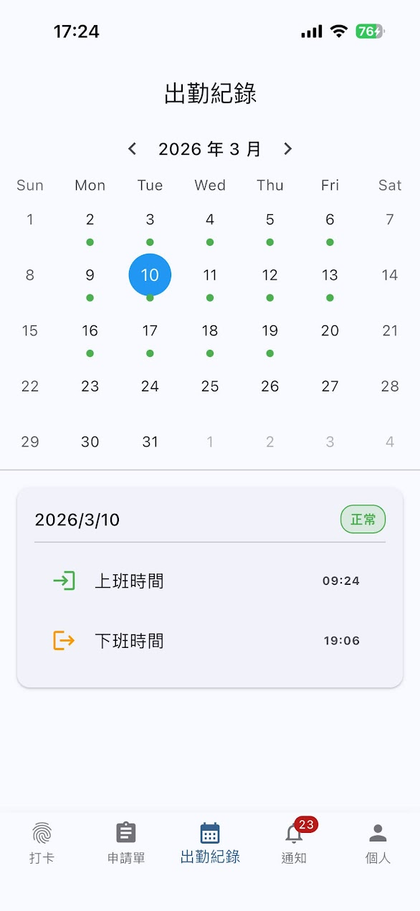
月報表
在出勤紀錄頁面右上角點擊「月報表」按鈕，進入個人月報表畫面。
報表內容
- 統計磚塊：出勤天數、遲到次數、早退次數、請假天數、加班時數等快速總覽
- 每日紀錄清單：依日期排列的詳細打卡紀錄，包含上下班時間、打卡方式、工時與異常標記
- 可切換月份查看不同月份的統計資料
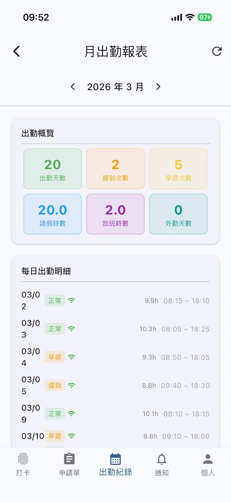

通知中心
點擊底部「通知」頁籤，查看所有系統通知。底部頁籤的通知圖示會顯示未讀數量紅點。
通知類型
- 簽核結果：申請被核准或駁回時收到通知
- 異常提醒：打卡異常（遲到、早退、缺勤）的提醒
- 系統公告：公司管理員發送的公告訊息
操作方式
- 未讀通知以醒目樣式顯示，已讀則為較淡的樣式
- 點擊通知可標示為已讀並檢視詳細內容
- 簽核結果類通知點擊後可直接跳轉到對應的申請詳情頁面
個人資料
點擊底部「個人」頁籤，查看與管理個人帳號資訊。
頁面內容
- 個人資訊卡片：顯示姓名、員工編號、部門、職稱與角色標籤（員工 / 主管 / 管理員）
- LINE 綁定狀態：顯示目前 LINE 帳號是否已綁定，未綁定可點擊進行綁定
- 快捷功能：
- 變更密碼
- LINE 帳號綁定 / 解除
- 關於系統（版本資訊）
- 登出：點擊最下方「登出」按鈕，清除登入狀態並返回登入頁面
附錄
常見問題（FAQ）
Q：員工忘記密碼怎麼辦？
請聯繫管理員，由管理員在「員工管理」中重設該員工的密碼。
Q：員工離職後如何處理？
管理員在「員工管理」中將該員工帳號停用即可。停用後員工無法登入，但所有歷史出勤與申請紀錄皆保留不受影響。
Q：為什麼員工無法申請某假別？
可能原因：
- 該假別在「假別設定」中被設為停用
- 該假別屬於「後端給假」類型（如婚假、喪假），管理員尚未在「假期額度」中為員工建立額度
- 該假別的年度額度已用完
Q：補卡申請為什麼無法送出？
補卡有以下限制，不符合則無法申請：
- 已超過事發後 3 個日曆天
- 該日已有 2 筆以上打卡紀錄
- 該日已有 2 筆補卡申請
Q：特休天數什麼時候更新？
管理員在每年初至「假期額度」頁面執行「初始化特休額度」，系統會依據年資規則與員工到職日自動計算。
Q：如何匯出報表？
在「月出勤報表」或「薪資輔助報表」頁面，點擊右上角的「匯出 Excel」按鈕即可下載。
系統聯繫資訊
如有系統操作上的問題，請聯繫公司系統管理員或人事單位。
差勤管理系統 操作手冊 v1.0 ｜ 最後更新：2026 年 4 月